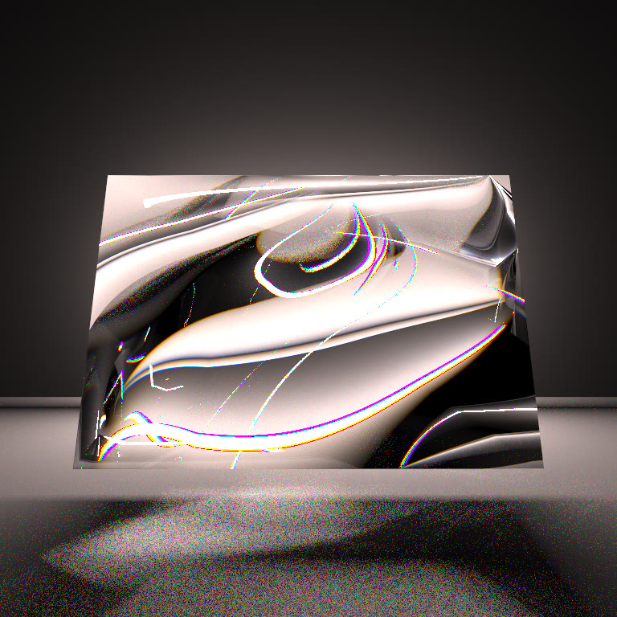
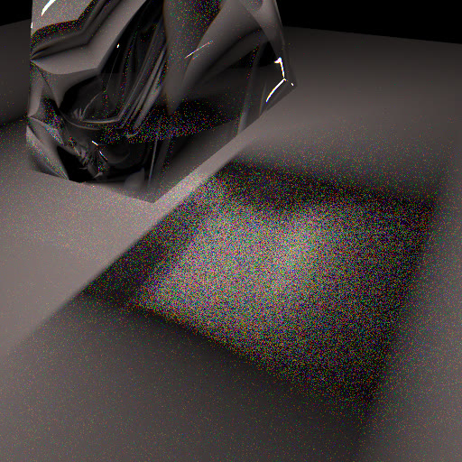
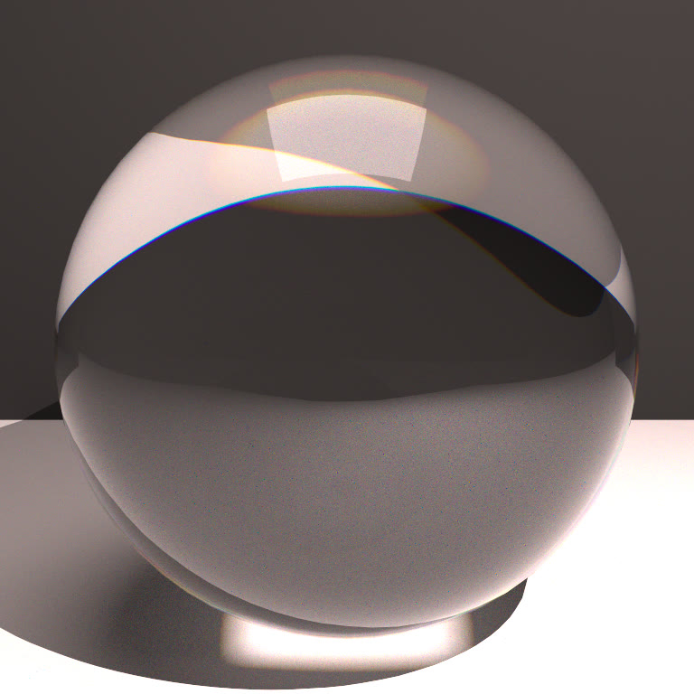
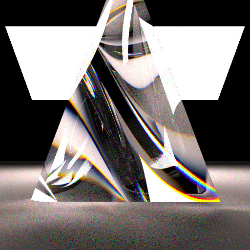
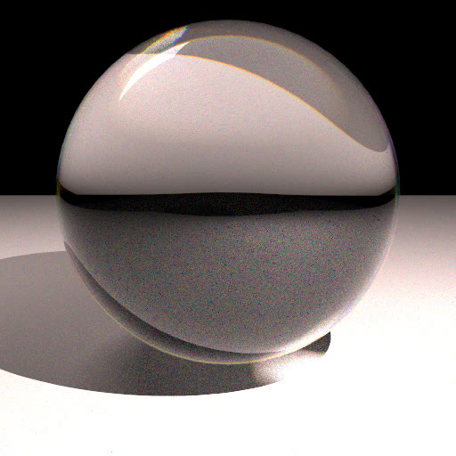

Back to all work
Spectral Path Tracer
Most renderers treat light as a single RGB color, which makes rainbows and prism effects impossible. We extended a GPU path tracer to trace individual wavelengths of light instead.

What it does
- Per-ray wavelength sampling. Each ray carries one wavelength between 380 and 700nm, kept monochromatic end to end.
- Dispersion. Glass index of refraction varies with wavelength using the Cauchy equation, n(λ) = A + B/λ².
- Spectral to RGB. CIE 1931 color matching functions convert each sample to sRGB, keeping negative values until tone mapping so they cancel correctly.
- Runtime toggle. Switch between spectral and RGB rendering without recompiling.
Results




Performance
The spectral path adds almost nothing per ray: one Cauchy evaluation and one color table lookup. The real cost is samples. Each sample now carries one wavelength instead of full RGB, so clean diffuse surfaces need about 1024 samples per pixel and clean glass caustics need 2048 to 4096.